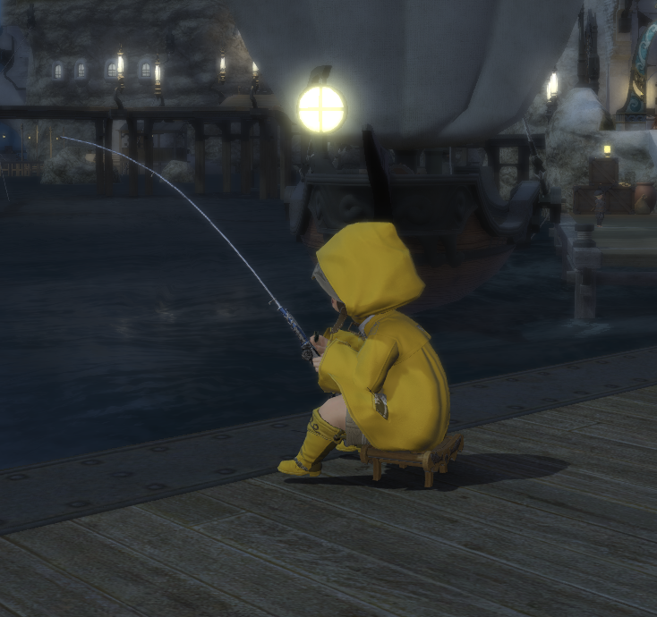
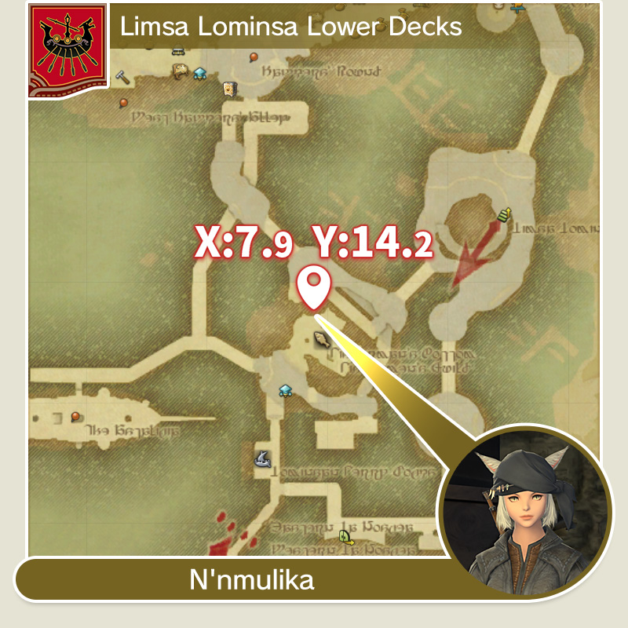
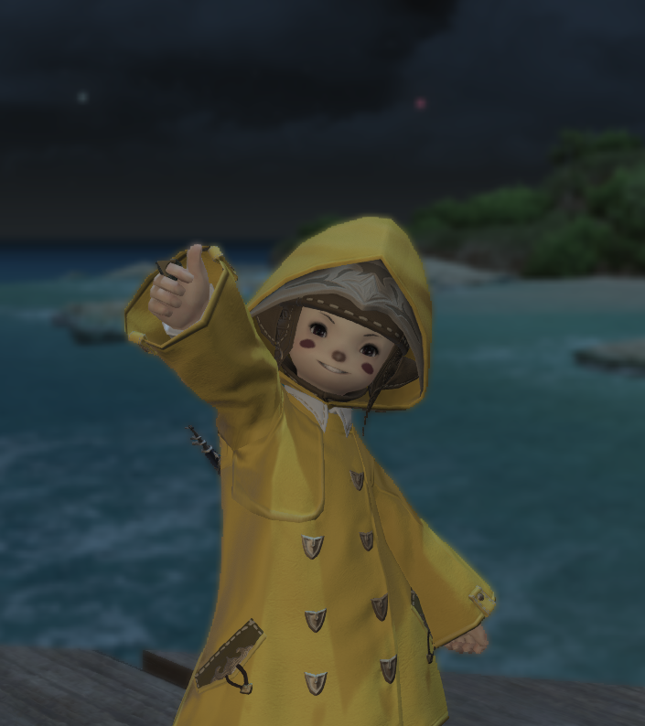

Fishing Class Guide
About:
Fishers are the harvesters of the realm's marine and freshwater animal resources.
The trade rose to prominence in the nation of Limsa Lominsa, owing to the plentiful
waters upon and around Vylbrand island. Be it from the shore of a sea, the bank of a
river, or the deck of a boat, Eorzea's anglers must constantly account for a wide range
of factors to optimize their success, including season, time, place, tools, and bait.

Introduction
Fishing is a relaxing and rewarding gathering class in Final Fantasy XIV. As a Fisher, you will travel to various locations to catch a wide variety of fish and other aquatic creatures. This guide will help you get started and provide tips for becoming a master Fisher.

Getting Started
Once you reach level 10 in the class you chose when starting the game, you can take on a new quest. Clearing this quest will allow you to join guilds for other classes.
To become a fisher, find and join the Fishermen's Guild on the lower decks of Limsa Lominsa (X:7.9 Y:14.2).
(After entering a guild, you must equip the tool of the class you want in order to change your class.)
Fishing Locations
There are many fishing locations throughout Eorzea, each with its own unique fish and aquatic creatures. Some popular fishing spots include:
- La Noscea
- The Black Shroud
- Thanalan
- Coerthas
- Mor Dhona

Fishing Tips
Here are some tips to help you become a successful Fisher:
- Pay attention to the weather and time of day, as some fish are only available under certain conditions.
- Use the right bait for the fish you are trying to catch.
- Upgrade your fishing gear as you level up to increase your chances of catching rare fish.
- Join a fishing community to share tips and find new fishing spots.
Leveling Tips
Here are some tips to help you level up quickly:
- Ocean Fishing
- Do Class quests
- Do delivery Quests
- Use Consumables. One important one is the Commercial Survival Manual
- Just Fish. The way to level up in this game is just to do it.